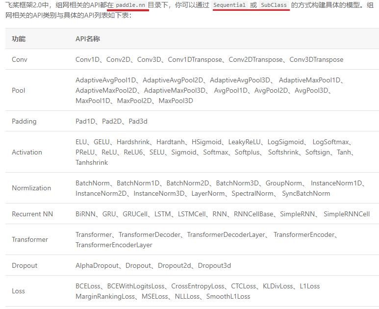
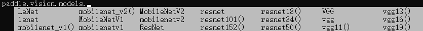
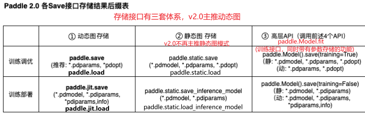
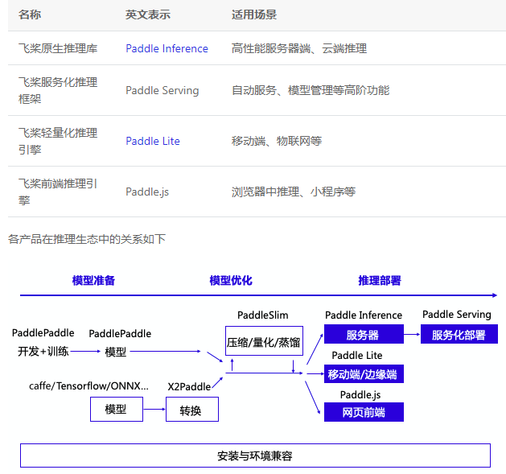

PaddlePaddle快速教程
基本简介¶
现在PaddlePaddle主推v2.0+，主推动态图，当然动态图也能转为静态图，转换方式笔记
动态图和静态图不同
- 动态图
- 动态图有诸多优点，包括易用的接口，Python风格的编程体验，友好的debug交互机制等。在动态图模式下，代码是按照我们编写的顺序依次执行。这种机制更符合Python程序员的习 惯，可以很方便地将大脑中的想法快速地转化为实际代码，也更容易调试。
- 但在性能方面， Python执行开销较大，与C++有一定差距。因此在工业界的许多部署场景中（如大型推荐系统、移动端）都倾向于直接使用C++来提速。
- 静态图
- 静态图在部署方面更具有性能的优势。静态图程序在编译执行时，先搭建模型 的神经网络结构，然后再对神经网络执行计算操作。预先搭建好的神经网络可以脱离Python依赖，在C++端被重新解析执行，而且拥有整体网络结构也能进行一些网络结构的优化。
- 动态图代码更易编写和debug，但在部署性能上，静态图更具优势。
基本使用¶
import paddle
# 1.创建tensor
# return -->Tensor(shape=[3], dtype=float64, place=CUDAPlace(0)/CPUPlace, stop_gradient=True,[2., 3., 4.]) # 上面这些属性可以直接获取，例如data.shape
data = paddle.to_tensor([2.0, 3.0, 4.0], dtype='float64') # 默认创建float32类型
cpu_tensor = paddle.to_tensor(1, place=paddle.CPUPlace()) # 数据放在cpu上
gpu_tensor = paddle.to_tensor(1, place=paddle.CUDAPlace(0)) # 数据放在gpu上
pin_memory_tensor = paddle.to_tensor(1, place=paddle.CUDAPinnedPlace()) # 数据固定在内存上
# 2.常用属性
data.name # 该tensor的唯一id，是独一无二的
# 'bool'，'float16'，'float32'，'float64'，'uint8'，'int8'，'int16'，'int32'，'int64'
data.dtype # int64默认，float32默认，paddle.cast(data, dtype='float64') # 通过该函数可以改变数据类型
data.place # 查看tensor在cpu/gpu上
# paddle.to_tensor([1.0, 2.0, 3.0], stop_gradient=False) # 将b设置为需要计算梯度的属性
data.stop_gradient # 查看一个Tensor是否计算并传播梯度,默认True:不计算梯度，False计算梯度
data.shape # 描述了tensor的每个维度上元素的数量，列表
data.size # 指tensor中全部元素的个数
data.ndim # tensor的维度数量
# axis或者dimension：指tensor某个特定的维度
data.reshape([m,n,...,-1])
# 3.numpy和tensor互相转换
data.numpy() # tensor->numpy,常用此来获取数值
paddle.to_tensor(np.array([2.0,3.0,4.0]).astype(np.float32)) # numpy->tensor
# 4.常用函数
paddle.get_device() # 返回cp/gpu:0等字符串
paddle.zeros([m, n]) # 创建数据全为0，shape为[m, n]的Tensor
paddle.ones([m, n]) # 创建数据全为1，shape为[m, n]的Tensor
paddle.full([m, n], 10) # 创建数据全为10，shape为[m, n]的Tensor
paddle.arange(start, end, step) # 创建从[start,end]，步长为step的Tensor
paddle.linspace(start, end, num) # 创建从start到end，元素个数固定为num的Tensor,等距切分
paddle.rand(shape,dtype=None) # 范围在[0, 1)的符合均匀分布的Tensor
paddle.randn(shape,dtype=None) # 标准正态分布（均值为0，标准差为1的正态随机分布）的随机Tensor
paddle.randint(low=0,high=None,shape=[1],dtype=None) # [low, high)的随机均匀分布Tensor,如果high=None,范围是[0,low)
paddle.randperm(n, dtype=None) # [0,n-1]随机排列的tensor
paddle.sort(x,axis=-1,descending=False) # 默认升序，给定维度排序，返回排好序的tensor
paddle.transpose(data,perm=[1,0,2]) # 维度转换
paddle.squeeze(a,axis=None) # 删除输入Tensor的Shape中尺寸为1的维度,默认全部删除
paddle.unsqueeze(x,axes) # 向输入Tensor的Shape中一个或多个位置（axis）插入尺寸为1的维度
paddle.where(condition, x, y) # condition=True->x,else y
paddle.topk(data,k=3) # return (values,indexs)
paddle.multiply(x,y) # x,y逐元素相乘，x/y维度相同
# 5.索引与切片，同numpy，切片赋值操作也是相同的，且支持广播机制
# 6.数学运算符，paddle.add(data1,data2) == data1.add(data2)，Paddle中Tensor的操作符均为非inplace操作，必须有返回值
data.abs() #逐元素取绝对值
data.ceil() #逐元素向上取整
data.floor() #逐元素向下取整
data.round() #逐元素四舍五入
data.exp() #逐元素计算自然常数为底的指数
data.log() #逐元素计算x的自然对数
data.reciprocal() #逐元素求倒数
data.square() #逐元素计算平方
data.sqrt() #逐元素计算平方根
data.sin() #逐元素计算正弦
data.cos() #逐元素计算余弦
data.add(y) #逐元素相加
data.subtract(y) #逐元素相减
data.multiply(y) #逐元素相乘
data.divide(y) #逐元素相除
data.mod(y) #逐元素相除并取余
data.pow(y) #逐元素幂运算
data.max() #指定维度上元素最大值，默认为全部维度
data.min() #指定维度上元素最小值，默认为全部维度
data.prod() #指定维度上元素累乘，默认为全部维度
data.sum() #指定维度上元素的和，默认为全部维度
# 下面简化版本也等价
x + y -> x.add(y) #逐元素相加
x - y -> x.subtract(y) #逐元素相减
x * y -> x.multiply(y) #逐元素相乘
x / y -> x.divide(y) #逐元素相除
x % y -> x.mod(y) #逐元素相除并取余
x ** y -> x.pow(y) #逐元素幂运算
# 6.1 下面是逻辑运算符
data.isfinite() #判断tensor中元素是否是有限的数字，即不包括inf与nan
data.equal_all(y) #判断两个tensor的全部元素是否相等，并返回shape为[1]的bool Tensor
data.equal(y) #判断两个tensor的每个元素是否相等，并返回shape相同的bool Tensor
data.not_equal(y) #判断两个tensor的每个元素是否不相等
data.less_than(y) #判断tensor x的元素是否小于tensor y的对应元素
data.less_equal(y) #判断tensor x的元素是否小于或等于tensor y的对应元素
data.greater_than(y) #判断tensor x的元素是否大于tensor y的对应元素
data.greater_equal(y) #判断tensor x的元素是否大于或等于tensor y的对应元素
data.allclose(y) #判断tensor x的全部元素是否与tensor y的全部元素接近，并返回shape为[1]的bool Tensor
# 等价操作
x == y -> x.equal(y) #判断两个tensor的每个元素是否相等
x != y -> x.not_equal(y) #判断两个tensor的每个元素是否不相等
x < y -> x.less_than(y) #判断tensor x的元素是否小于tensor y的对应元素
x <= y -> x.less_equal(y) #判断tensor x的元素是否小于或等于tensor y的对应元素
x > y -> x.greater_than(y) #判断tensor x的元素是否大于tensor y的对应元素
x >= y -> x.greater_equal(y) #判断tensor x的元素是否大于或等于tensor y的对应元素
# 6.2 下面操作仅针对bool型Tensor
x.logical_and(y) #对两个bool型tensor逐元素进行逻辑与操作
x.logical_or(y) #对两个bool型tensor逐元素进行逻辑或操作
x.logical_xor(y) #对两个bool型tensor逐元素进行逻辑亦或操作
x.logical_not(y) #对两个bool型tensor逐元素进行逻辑非操作
# 6.3 线性代数相关
x.cholesky() #矩阵的cholesky分解
x.t() #矩阵转置
x.transpose([1, 0]) #交换axis 0 与axis 1的顺序
x.norm('fro') #矩阵的Frobenius 范数
x.dist(y, p=2) #矩阵（x-y）的2范数
x.matmul(y) #矩阵乘法
自动微分
import paddle
# 1.小例子
x = paddle.to_tensor([1.0, 2.0, 3.0], stop_gradient=False)
y = paddle.to_tensor([4.0, 5.0, 6.0], stop_gradient=False)
z = x ** 2 + 4 * y
# 默认会释放反向计算图。如果在backward()之后继续添加OP，需要将backward()中的retain_graph参数设置为True，此时之前的反向计算图会保留。
z.backward() # z.backward(retain_graph=True)
x.grad # 2x->[2.,4.,6.]
y.grad # 4->[4.,4.,4.]
# 2.backward()会累积梯度，可以使用clear_grad()函数来清除当前Tensor的梯度
loss.backward() # print(loss.gradient()) # [1.0]
loss.clear_grad() # print(loss.gradient()) # [0.0]
快速上手¶
数据集的定义与加载
import paddle
from paddle.vision.transforms import ToTensor
# 1.自身携带数据
print('视觉相关数据集：', paddle.vision.datasets.__all__)
print('自然语言相关数据集：', paddle.text.datasets.__all__)
#视觉相关数据集： ['DatasetFolder', 'ImageFolder', 'MNIST', 'FashionMNIST', 'Flowers', 'Cifar10', 'Cifar100', 'VOC2012']
#自然语言相关数据集： ['Conll05st', 'Imdb', 'Imikolov', 'Movielens', 'UCIHousing', 'WMT14', 'WMT16']
# 举例说明，默认下载到 ~/.cache/paddle/dataset
train_dataset = paddle.vision.datasets.MNIST(mode='train', transform=ToTensor())
val_dataset = paddle.vision.datasets.MNIST(mode='test', transform=ToTensor())
# 2.自定义数据集 paddle.io.Dataset基类
import paddle
from paddle.io import Dataset
class MyDataset(Dataset):
"""
步骤一：继承paddle.io.Dataset类
"""
def __init__(self, num_samples):
"""
步骤二：实现构造函数，定义数据集大小
"""
super(MyDataset, self).__init__()
self.num_samples = num_samples
def __getitem__(self, index):
"""
步骤三：实现__getitem__方法，定义指定index时如何获取数据，并返回单条数据（训练数据，对应的标签）
"""
data = paddle.uniform(IMAGE_SIZE, dtype='float32')
label = paddle.randint(0, CLASS_NUM-1, dtype='int64')
return data, label
def __len__(self):
"""
步骤四：实现__len__方法，返回数据集总数目
"""
return self.num_samples
custom_dataset = MyDataset(BATCH_SIZE * BATCH_NUM) # 测试定义的数据集
# 数据加载,DataLoader 默认用异步加载数据的方式来读取数据，一方面可以提升数据加载的速度，另一方面也会占据更少的内存。如果你需要同时加载全部数据到内存中，请设置use_buffer_reader=False。
train_loader = paddle.io.DataLoader(custom_dataset, batch_size=BATCH_SIZE, shuffle=True)
# 如果要加载内置数据集，将 custom_dataset 换为 train_dataset 即可
for batch_id, (x_data,y_data) in enumerate(train_loader()):
print(x_data.shape,y_data.shape)
数据预处理
import paddle
# 数据处理方法： ['BaseTransform', 'Compose', 'Resize', 'RandomResizedCrop', 'CenterCrop', 'RandomHorizontalFlip', 'RandomVerticalFlip', 'Transpose', 'Normalize', 'BrightnessTransform', 'SaturationTransform', 'ContrastTransform', 'HueTransform', 'ColorJitter', 'RandomCrop', 'Pad', 'RandomRotation', 'Grayscale', 'ToTensor', 'to_tensor', 'hflip', 'vflip', 'resize', 'pad', 'rotate', 'to_grayscale', 'crop', 'center_crop', 'adjust_brightness', 'adjust_contrast', 'adjust_hue', 'normalize']
print('数据处理方法：', paddle.vision.transforms.__all__)
# 1.使用内置的transform，当然，也可以在自定义数据集类中直接应用
from paddle.vision.transforms import Compose, Resize, ColorJitter
# 定义想要使用的数据增强方式，这里包括随机调整亮度、对比度和饱和度，改变图片大小
transform = Compose([
ColorJitter(),
Resize(size=32),
])
# 通过transform参数传递定义好的数据增强方法即可完成对自带数据集的增强
train_dataset = paddle.vision.datasets.MNIST(mode='train', transform=transform)
网络构成

import paddle
# 1.Sequential 组网：针对顺序的线性网络结构
mnist = paddle.nn.Sequential(
paddle.nn.Flatten(),
paddle.nn.Linear(784, 512),
paddle.nn.ReLU(),
paddle.nn.Dropout(0.2),
paddle.nn.Linear(512, 10)
)
# 2.SubClass组网，针对一些比较复杂的网络结构，就可以使用Layer子类定义的方式来进行模型代码编写，在__init__构造函数中进行组网Layer的声明，在forward中使用声明的Layer变量进行前向计算。子类组网方式也可以实现sublayer的复用，针对相同的layer可以在构造函数中一次性定义，在forward中多次调用。
# Layer类继承方式组网
class Mnist(paddle.nn.Layer):
def __init__(self):
super(Mnist, self).__init__()
self.flatten = paddle.nn.Flatten()
self.linear_1 = paddle.nn.Linear(784, 512)
self.linear_2 = paddle.nn.Linear(512, 10)
self.relu = paddle.nn.ReLU()
self.dropout = paddle.nn.Dropout(0.2)
def forward(self, inputs):
y = self.flatten(inputs)
y = self.linear_1(y)
y = self.relu(y)
y = self.dropout(y)
y = self.linear_2(y)
return y
mnist_2 = Mnist()

# 3.上图是框架内置模型
import paddle
resnet = paddle.vision.models.resnet18()
paddle.summary(resnet,(1,3,224,224)) # 打印网络结构
训练与预测：两种训练方式
- 一种是用
paddle.Model对模型进行封装，通过高层API如Model.fit()、Model.evaluate()、Model.predict()等完成模型的训练与预测； - 另一种就是基于基础
API常规的训练方式。
net = xxx
train_dataset,test_dataset = xxx,xxx
# 第一种方式
# 1.1 使用paddle.Model对模型进行封装
model = paddle.Model(net)
# 1.2 通过Model.prepare 对模型进行配置，选择合适的优化器，loss，精度计算方法等
model.prepare(optimizer=paddle.optimizer.Adam(parameters=model.parameters()),
loss=paddle.nn.CrossEntropyLoss(),
metrics=paddle.metric.Accuracy())
# 1.3 训练模型 Model.fit()
model.fit(train_dataset, # 指定训练数据集
epochs=5, # 设置训练轮次
batch_size=64, # ，设置每次数据集计算的批次大小
verbose=1) # 设置日志格式
# 1.4 评估模型，Model.evaluate()
eval_result = model.evaluate(test_dataset, verbose=1) # 返回评估的字典，包含指标是按照prepare中定义的返回，{'loss':xxx}/{'loss':xxx,'metric name1':xxx,'metric name2':xxx}
# 1.5 模型推理
test_result = model.predict(test_dataset) # 返回格式是一个list，元素数目对应模型的输出数目，如果是多输出，就是list包裹多个输出，单输出就是list包裹单个输出
# 第二种方式
net.train() # 开启训练模式
optim = paddle.optimizer.Adam(parameters=net.parameters()) # 设置优化器
loss_fn = paddle.nn.CrossEntropyLoss() # 设置损失函数
for epoch in range(epochs):
for batch_id, (x_data,y_data) in enumerate(train_loader()):
predicts = mnist(x_data) # 预测结果
acc = paddle.metric.accuracy(predicts, y_data) # 计算精度
loss.backward() # 反向传播
if (batch_id+1) % 100 == 0:
print(f"batch_id:{} loss:{loss.numpy()} acc:{acc.numpy()}")
optim.step() # 更新参数
optim.clear_grad()
net.eval() # 开启验证模式
for batch_id, (x_data,y_data) in enumerate(test_loader()):
predicts = mnist(x_data) # 预测结果
acc = paddle.metric.accuracy(predicts, y_data) # 预测精度
print(acc.numpy())
自动混合训练¶
paddle.amp.auto_cast 和 paddle.amp.GradScaler 能够实现自动混合精度训练
import paddle
model = xxx
optimizer = paddle.optimizer.SGD(learning_rate=0.0001,parameters=model.parameters())
# Step1：定义 GradScaler，用于缩放loss比例，避免浮点数溢出
scaler = paddle.amp.GradScaler(init_loss_scaling=1024)
for epoch in range(epochs):
for i, (data, label) in enumerate(zip(train_data, labels)):
# Step2：创建AMP上下文环境，开启自动混合精度训练
with paddle.amp.auto_cast():
output = model(data)
loss = mse(output, label)
# Step3：使用 Step1中定义的 GradScaler 完成loss的缩放，用缩放后的loss进行反向传播
scaled = scaler.scale(loss)
scaled.backward()
# 训练模型
scaler.minimize(optimizer, scaled)
optimizer.clear_grad()
进阶用法，梯度累加:多次循环后梯度不断累加，直至达到一定次数后，用累加的梯度更新参数，这样可以起到变相扩大 batch_size 的作用。
import paddle
model = xxx
optimizer = paddle.optimizer.SGD(learning_rate=0.0001,parameters=model.parameters())
accumulate_batchs_num = 10 # 梯度累加中 batch 的数量
# Step1：定义 GradScaler，用于缩放loss比例，避免浮点数溢出
scaler = paddle.amp.GradScaler(init_loss_scaling=1024)
for epoch in range(epochs):
for i, (data, label) in enumerate(zip(train_data, labels)):
# Step2：创建AMP上下文环境，开启自动混合精度训练
with paddle.amp.auto_cast():
output = model(data)
loss = mse(output, label)
# Step3：使用 Step1中定义的 GradScaler 完成loss的缩放，用缩放后的loss进行反向传播
scaled = scaler.scale(loss)
scaled.backward()
# 训练模型,每累加10个batch才进行更新，并清除梯度
if (i + 1) % accumulate_batchs_num == 0:
scaler.minimize(optimizer, scaled)
optimizer.clear_grad()
多卡、分布式训练¶
单机多卡训练
当使用方式一:paddle.Model封装来训练时，想要启动单机多卡训练非常简单，代码不需要做任何修改，只需要在启动时增加一下参数-m paddle.distributed.launch。
# 单机单卡启动，默认使用第0号卡
$ python train.py
# 单机多卡启动，默认使用当前可见的所有卡
$ python -m paddle.distributed.launch train.py
# 单机多卡启动，设置当前使用的第0号和第1号卡
$ python -m paddle.distributed.launch --gpus='0,1' train.py
# 单机多卡启动，设置当前使用第0号和第1号卡
$ export CUDA_VISIBLE_DEVICES=0,1
$ python -m paddle.distributed.launch train.py
当使用方式二:基础API时，单机多卡代码如下
import paddle
# 第1处改动 导入分布式训练所需的包
import paddle.distributed as dist
net = xxx
train_dataset,test_dataset = xxx,xxx
# 第2处改动，初始化并行环境,注意：单卡训练不支持调用init_parallel_env
dist.init_parallel_env()
# 第3处改动，增加paddle.DataParallel封装
net = paddle.DataParallel(net)
net.train()
....
# 单机多卡启动，默认使用当前可见的所有卡
$ python -m paddle.distributed.launch train.py
# 单机多卡启动，设置当前使用的第0号和第1号卡
$ python -m paddle.distributed.launch --gpus '0,1' train.py
# 单机多卡启动，设置当前使用第0号和第1号卡
$ export CUDA_VISIBLE_DEVICES=0,1
$ python -m paddle.distributed.launch train.py
分布式训练
推荐使用Fleet API进行分布式训练笔记
多进程处理¶
import paddle
import paddle.nn as nn
import paddle.optimizer as opt
import paddle.distributed as dist
def train(print_result=False):
# 上面的训练步骤，单卡或者多卡都行
# 举例如下：
dist.init_parallel_env() # 1. 初始化并行训练环境
model = xx
labels = xx
loss_fn = nn.MSELoss()
adam = opt.Adam(learning_rate=0.001, parameters=model.parameters())
loss = loss_fn(paddle.randn([n,3,224,224],'float32'),labels)
if print_result is True:
print("loss:", loss.numpy())
loss.backward()
adam.step()
adam.clear_grad()
# 使用方式1：仅传入训练函数
# 适用场景：训练函数不需要任何参数，并且需要使用所有当前可见的GPU设备并行训练
if __name__ == '__main__':
dist.spawn(train)
# 使用方式2：传入训练函数和参数
# 适用场景：训练函数需要一些参数，并且需要使用所有当前可见的GPU设备并行训练
if __name__ == '__main__':
dist.spawn(train, args=(True,))
# 使用方式3：传入训练函数、参数并指定并行进程数
# 适用场景：训练函数需要一些参数，并且仅需要使用部分可见的GPU设备并行训练，例如：
# 当前机器有8张GPU卡 {0,1,2,3,4,5,6,7}，此时会使用前两张卡 {0,1}；
# 或者当前机器通过配置环境变量 CUDA_VISIBLE_DEVICES=4,5,6,7，仅使4张
# GPU卡可见，此时会使用可见的前两张卡 {4,5}
if __name__ == '__main__':
dist.spawn(train, args=(True,), nprocs=2)
# 使用方式4：传入训练函数、参数、指定进程数并指定当前使用的卡号
# 使用场景：训练函数需要一些参数，并且仅需要使用部分可见的GPU设备并行训练，但是
# 可能由于权限问题，无权配置当前机器的环境变量，例如：当前机器有8张GPU卡
# {0,1,2,3,4,5,6,7}，但你无权配置CUDA_VISIBLE_DEVICES，此时可以通过
# 指定参数 gpus 选择希望使用的卡，例如 gpus='4,5'，
# 可以指定使用第4号卡和第5号卡
if __name__ == '__main__':
dist.spawn(train, nprocs=2, gpus='4,5')
自定义指标+召回函数(钩子函数)¶
自定义loss：继承paddle.nn.Layer但需要实现其__init__、forward()函数
class SoftmaxWithCrossEntropy(paddle.nn.Layer):
def __init__(self):
super(SoftmaxWithCrossEntropy, self).__init__()
def forward(self, input, label):
loss = F.softmax_with_cross_entropy(input,
label,
return_softmax=False,
axis=1)
return paddle.mean(loss)
**自定义Metric**评估方法|举例子code
class SelfDefineMetric(paddle.metric.Metric):
"""
1. 继承paddle.metric.Metric
"""
def __init__(self):
"""
2. 构造函数实现，自定义参数即可
"""
super(SelfDefineMetric, self).__init__()
def name(self):
"""
3. 实现name方法，返回定义的评估指标名字
"""
return '自定义评价指标的名字'
def compute(self, ...)
"""
4. 本步骤可以省略，实现compute方法，这个方法主要用于`update`的加速，可以在这个方法中调用一些paddle实现好的Tensor计算API，编译到模型网络中一起使用低层C++ OP计算。
"""
return 自己想要返回的数据，会做为update的参数传入。
def update(self, ...):
"""
5. 实现update方法，用于单个batch训练时进行评估指标计算。
- 当`compute`类函数未实现时，会将模型的计算输出和标签数据的展平作为`update`的参数传入。
- 当`compute`类函数做了实现时，会将compute的返回结果作为`update`的参数传入。
"""
return acc value
def accumulate(self):
"""
6. 实现accumulate方法，返回历史batch训练积累后计算得到的评价指标值。
每次`update`调用时进行数据积累，`accumulate`计算时对积累的所有数据进行计算并返回。
结算结果会在`fit`接口的训练日志中呈现。
"""
# 利用update中积累的成员变量数据进行计算后返回
return accumulated acc value
def reset(self):
"""
7. 实现reset方法，每个Epoch结束后进行评估指标的重置，这样下个Epoch可以重新进行计算。
"""
# do reset action
自定义callback：用来在每轮训练和每个batch训练前后进行调用，可以通过callback收集到训练过程中的一些数据和参数，或者实现一些自定义操作。
class SelfDefineCallback(paddle.callbacks.Callback):
"""
1. 继承paddle.callbacks.Callback
2. 按照自己的需求实现以下类成员方法：
def on_train_begin(self, logs=None) 训练开始前，`Model.fit`接口中调用
def on_train_end(self, logs=None) 训练结束后，`Model.fit`接口中调用
def on_eval_begin(self, logs=None) 评估开始前，`Model.evaluate`接口调用
def on_eval_end(self, logs=None) 评估结束后，`Model.evaluate`接口调用
def on_predict_begin(self, logs=None) 预测测试开始前，`Model.predict`接口中调用
def on_predict_end(self, logs=None) 预测测试结束后，`Model.predict`接口中调用
def on_epoch_begin(self, epoch, logs=None) 每轮训练开始前，`Model.fit`接口中调用
def on_epoch_end(self, epoch, logs=None) 每轮训练结束后，`Model.fit`接口中调用
# 单个Batch训练开始前，`Model.fit`和`Model.train_batch`接口中调用
def on_train_batch_begin(self, step, logs=None)
# 单个Batch训练结束后，`Model.fit`和`Model.train_batch`接口中调用
def on_train_batch_end(self, step, logs=None)
# 单个Batch评估开始前，`Model.evalute`和`Model.eval_batch`接口中调用
def on_eval_batch_begin(self, step, logs=None)
# 单个Batch评估结束后，`Model.evalute`和`Model.eval_batch`接口中调用
def on_eval_batch_end(self, step, logs=None)
# 单个Batch预测测试开始前，`Model.predict`和`Model.test_batch`接口中调用
def on_predict_batch_begin(self, step, logs=None)
# 单个Batch预测测试结束后，`Model.predict`和`Model.test_batch`接口中调用
def on_predict_batch_end(self, step, logs=None)
"""
def __init__(self):
super(SelfDefineCallback, self).__init__()
# 按照需求定义自己的类成员方法
# 举例子
class ModelCheckpoint(Callback):
def __init__(self, save_freq=1, save_dir=None):
self.save_freq = save_freq
self.save_dir = save_dir
def on_epoch_begin(self, epoch=None, logs=None):
self.epoch = epoch
def _is_save(self):
return self.model and self.save_dir and ParallelEnv().local_rank == 0
def on_epoch_end(self, epoch, logs=None):
if self._is_save() and self.epoch % self.save_freq == 0:
path = '{}/{}'.format(self.save_dir, epoch)
print('save checkpoint at {}'.format(os.path.abspath(path)))
self.model.save(path)
def on_train_end(self, logs=None):
if self._is_save():
path = '{}/final'.format(self.save_dir)
print('save checkpoint at {}'.format(os.path.abspath(path)))
self.model.save(path)
模型存储与加载¶

只存储参数，用于训练调优
# 1.1 参数存储 save,将state_dict存储至磁盘
paddle.save(net.state_dict(), "linear_net.pdparams")
paddle.save(adam.state_dict(), "adam.pdopt")
# 1.2 参数载入 load,由磁盘配置到目标对象中
layer_state_dict = paddle.load("linear_net.pdparams")
opt_state_dict = paddle.load("adam.pdopt")
net.set_state_dict(layer_state_dict)
adam.set_state_dict(opt_state_dict)
同时存储/载入模型结构和参数：可以使用 paddle.jit.save/load 实现
- 动转静训练 + 模型&参数存储：动转静训练相比直接使用动态图训练具有更好的执行性能
# 1.net的实现时，forward方法需要经由 paddle.jit.to_static 装饰，经过装时后，会先生成描述模型的Program，然后通过执行Program获取计算结果
class LinearNet(nn.Layer):
def __init__(self):
super(LinearNet, self).__init__()
self._linear = nn.Linear(IMAGE_SIZE, CLASS_NUM)
# 若最终需要生成的描述模型的Program支持动态输入，可以同时指明模型的 InputSepc
# @paddle.jit.to_static(input_spec=[InputSpec(shape=[None, 784], dtype='float32')])
@paddle.jit.to_static
def forward(self, x):
return self._linear(x)
# 2. 确保Layer.forward方法中仅实现预测功能，避免将训练所需的loss计算逻辑写入forward方法,就是不要再forward里面计算loss，会增大Layer使用的复杂性，要保持简洁性
# 3. 如果你需要存储多个方法，需要用 paddle.jit.to_static 装饰每一个需要被存储的方法，命名规则：forward的模型名字为：模型名+后缀，其他函数的模型名字为：模型名+函数名+后缀。每个函数有各自的pdmodel和pdiparams的文件，所有函数共用pdiparams.info。
class LinearNet(nn.Layer):
def __init__(self):
super(LinearNet, self).__init__()
self._linear = nn.Linear(IMAGE_SIZE, CLASS_NUM)
self._linear_2 = nn.Linear(IMAGE_SIZE, CLASS_NUM)
# 命名规则:net.pdiparams,net.pdmodel
@paddle.jit.to_static(input_spec=[InputSpec(shape=[None, IMAGE_SIZE], dtype='float32')])
def forward(self, x):
return self._linear(x)
# 命名规则:net.another_forward.pdiparams,net.another_forward.pdmodel
@paddle.jit.to_static(input_spec=[InputSpec(shape=[None, IMAGE_SIZE], dtype='float32')])
def another_forward(self, x):
return self._linear_2(x)
# 4.如何存储
path = "example.model/linear"
paddle.jit.save(net, path)
- 动态图训练 + 模型&参数存储：动态图模式相比动转静模式更加便于调试，如果你仍需要使用动态图直接训练，也可以在动态图训练完成后调用
paddle.jit.save直接存储模型和参数。
# save
path = "example.dy_model/linear"
paddle.jit.save(
layer=net,
path=path,
input_spec=[InputSpec(shape=[None, 784], dtype='float32')])
# 1.相比动转静训练，Layer对象的forward方法不需要额外装饰，保持原实现即可
# 2.与动转静训练相同，请确保Layer.forward方法中仅实现预测功能，避免将训练所需的loss计算逻辑写入forward方法
# 3.在最后使用 paddle.jit.save 时，需要指定Layer的 InputSpec ，Layer对象forward方法的每一个参数均需要对应的 InputSpec 进行描述，不能省略。这里的 input_spec 参数支持两种类型的输入
# 4.InputSpec 列表:使用InputSpec描述forward输入参数的shape，dtype和name，name一般省略；
input_spec=[InputSpec(shape=[None, 784], dtype='float32')]
# 也可以直接使用DataLoader得到的image作为输入
paddle.jit.save(
layer=net,
path=path,
input_spec=[image])
- 模型参数和结构载入：使用
paddle.jit.load载入即可，载入后得到的是一个Layer的派生类对象TranslatedLayer，TranslatedLayer具有Layer具有的通用特征，支持切换train或者eval模式，可以进行模型调优或者预测。
path = "example.model/linear"
net = paddle.jit.load(path)
# 1.执行推理
net.eval()
pred = net(paddle.randn([1, IMAGE_SIZE], 'float32'))
# 2.执行训练 fine-tune
net.train()
.... # 正常训练步骤
# save after fine-tuning
paddle.jit.save(net, "fine-tune.model/linear", input_spec=[x])
- 只载入模型参数：
paddle.jit.save同时保存了模型和参数，如果你只需要从存储结果中载入模型的参数，可以使用paddle.load接口载入，返回所存储模型的state_dict
# 1.定义net结构
class LinearNet(nn.Layer):
def __init__(self):
super(LinearNet, self).__init__()
self._linear = nn.Linear(IMAGE_SIZE, CLASS_NUM)
@paddle.jit.to_static
def forward(self, x):
return self._linear(x)
# create network
net = LinearNet()
# load
path = "example.model/linear"
state_dict = paddle.load(path)
# inference
net.set_state_dict(state_dict, use_structured_name=False)
net.eval()
pred = net(paddle.randn([1, IMAGE_SIZE], 'float32'))
模型转ONNX¶
# 主要使用paddle2onnx库
pip install paddle2onnx onnx onnxruntime -i https://mirror.baidu.com/pypi/simple # 如果网速不好，可以使用其他源下载
动态图导出ONNX
import paddle
from paddle import nn
from paddle.static import InputSpec
class LinearNet(nn.Layer):
def __init__(self):
super(LinearNet, self).__init__()
self._linear = nn.Linear(784, 10)
def forward(self, x):
return self._linear(x)
# 1.export to ONNX
layer = LinearNet()
save_path = 'onnx.save/linear_net'
x_spec = InputSpec([None, 784], 'float32', 'x')
paddle.onnx.export(layer, save_path, input_spec=[x_spec])
# 2.check by ONNX
import onnx
onnx_file = save_path + '.onnx'
onnx_model = onnx.load(onnx_file)
onnx.checker.check_model(onnx_model)
print('The model is checked!')
# 3.ONNXRuntime inference
import numpy as np
import onnxruntime
x = np.random.random((2, 784)).astype('float32')
# predict by ONNX Runtime
ort_sess = onnxruntime.InferenceSession(onnx_file)
ort_inputs = {ort_sess.get_inputs()[0].name: x}
ort_outs = ort_sess.run(None, ort_inputs)
print("Exported model has been predicted by ONNXRuntime!")
# predict by Paddle
layer.eval()
paddle_outs = layer(x)
# compare ONNX Runtime and Paddle results
np.testing.assert_allclose(ort_outs[0], paddle_outs.numpy(), rtol=1.0, atol=1e-05)
print("The difference of results between ONNXRuntime and Paddle looks good!")
可视化工具VisualDL:笔记¶
推理部署:笔记¶
- Paddle-Lite的使用
- 模型压缩PaddleSlim:模型裁剪、定点量化(在线/离线)、知识蒸馏、参数/模型结构搜索
- Paddleslim中文文档|PaddleSlim github
- 在线量化使用示例
- 离线量化使用示例
